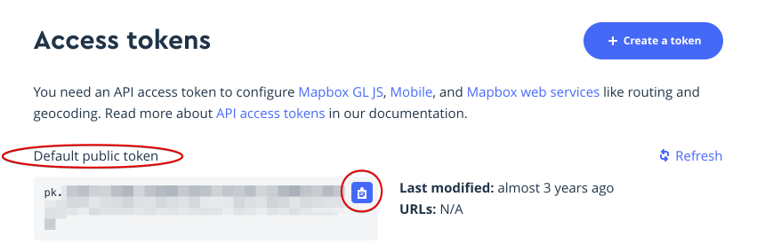

Mapbox API Access Token
How to add a Mapbox API Access Token to MapHub
Sign up to for free account on Mapbox: https://account.mapbox.com/auth/signup/
Navigate to the Tokens section in your account:
Under access tokens, look for Default public token, and click the blue icon to copy the token to the clipboard. You can also select the text and copy it manually. Important: make sure the token you are selecting starts with
pk.
Go to your MapHub account's Basemaps Settings: https://maphub.net/settings/basemaps
Paste the copied text to Mapbox Access Token field and click Save.

Congratulations, now you have unlimited basemap usage for Mapbox on MapHub.